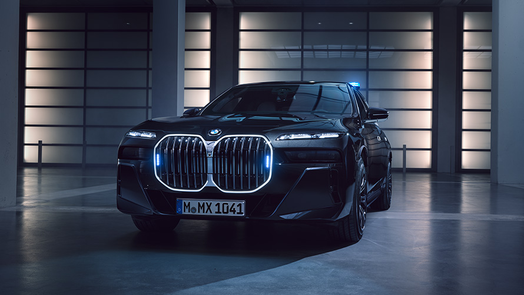

The company's automobiles are marketed under the BMW, Mini and Rolls-Royce brands, and motorcycles are marketed under the BMW Motorrad brand. In 2023, BMW was the world's ninth-largest producer of motor vehicles, and the 6th largest by revenue,[7] with 2,555,341 vehicles produced in that year alone.[8] In 2023, the company was ranked 46th in the Forbes Global 2000.[9] The company has significant motor-sport history, especially in touring cars, sports cars, and the Isle of Man TT.
